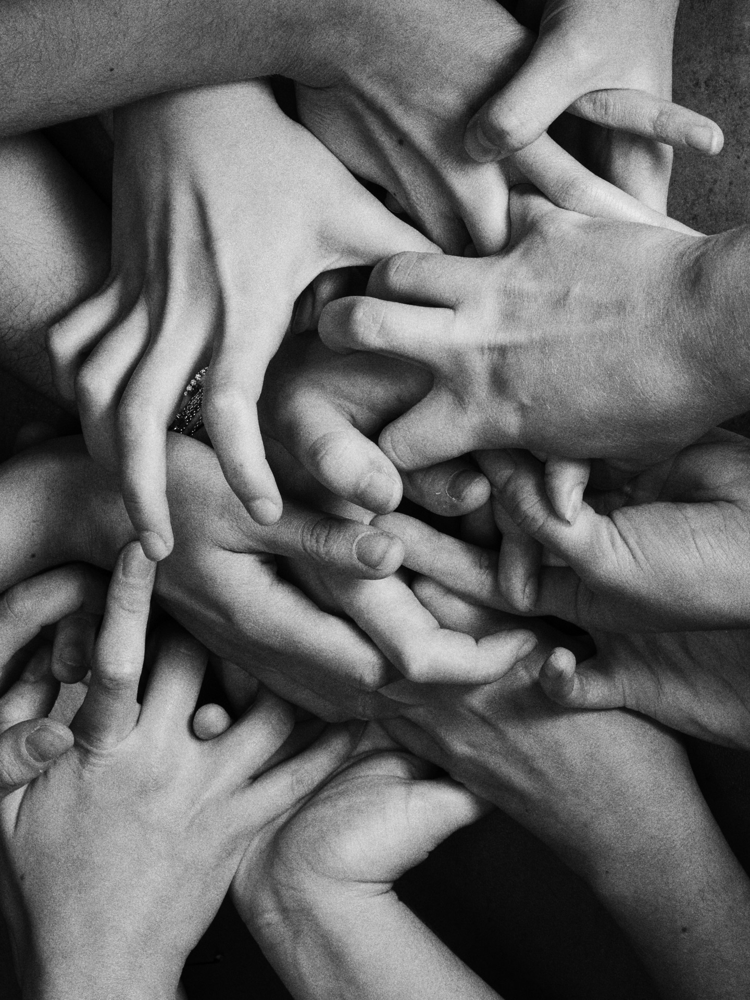
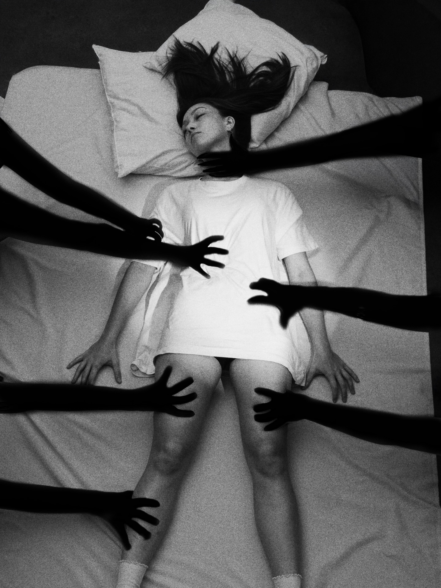
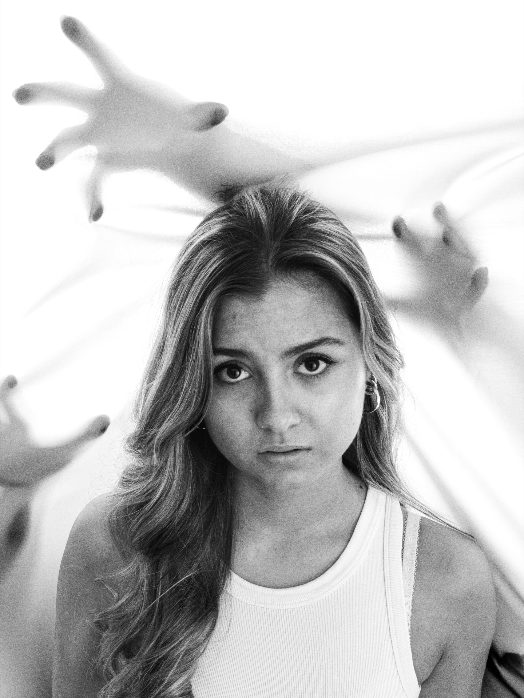
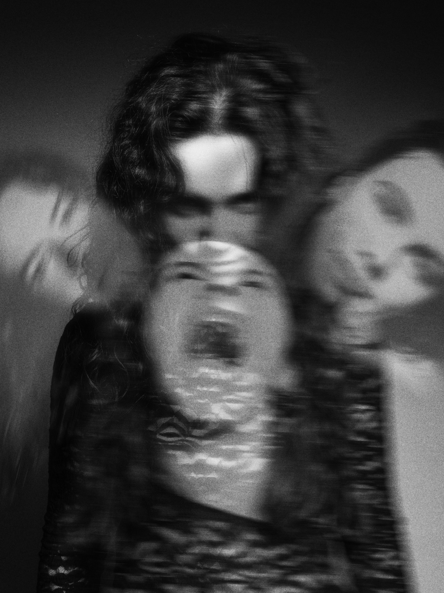
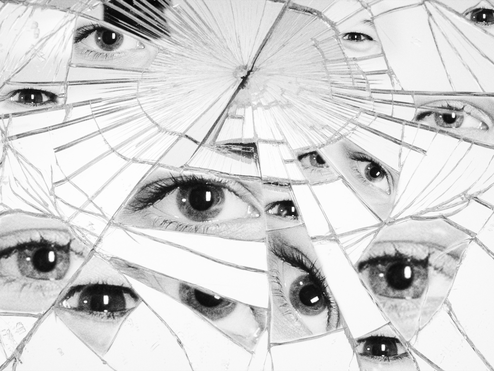
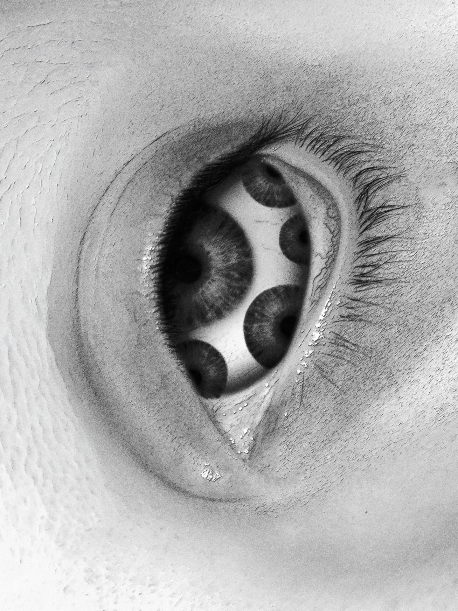
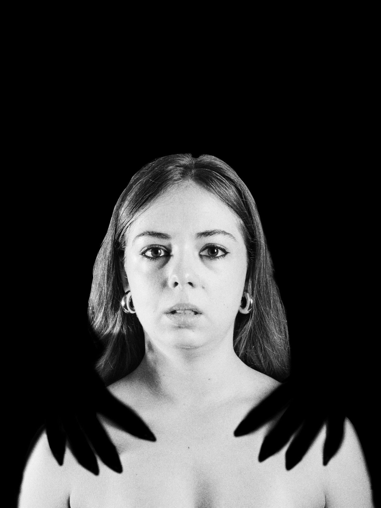

Projet artistique — ISEFAC Lille
Exposition
Photo
Autour de la notion d'écho — entre ombre, lumière et regard extérieur. Une exposition immersive conçue de A à Z : concept artistique, scénographie, mise en espace et communication. Trois prix remportés à l'issue de l'événement.








Le projet
Une expérience immersive autour de l'écho, de l'ombre et de la lumière
L'exposition photographique a été conçue autour d'une notion centrale : l'écho. Non pas l'écho sonore, mais l'écho visuel — ce moment où une image renvoie le regard vers quelque chose d'intime, de personnel, d'universel. Entre ombre et lumière, entre regard extérieur et introspection, chaque cliché a été sélectionné et mis en valeur pour provoquer une résonance chez le public.
À travers un travail minutieux sur l'image, la lumière et la mise en scène, l'exposition proposait une expérience immersive, invitant le public à ressentir, interpréter et se reconnaître dans des clichés travaillés avec soin. L'enjeu n'était pas simplement d'exposer des photographies, mais de créer un parcours émotionnel cohérent, où chaque élément — la disposition des œuvres, l'éclairage, les supports — participait à la narration globale.
Réalisé dans le cadre de la formation ISEFAC Lille, ce projet a mobilisé toutes les compétences acquises en gestion de projet, communication et direction artistique. Le résultat : une exposition saluée par le jury et le public, couronnée de trois distinctions.
Mes missions
De la conception artistique à la logistique du jour J
- Conception du concept artistique et définition de la ligne directrice de l'exposition
- Scénographie et mise en espace — disposition des œuvres, circulation du public, ambiance générale
- Sélection et mise en valeur des photographies selon leur cohérence avec le thème de l'écho
- Création des supports de communication : affiche, programme, visuels digitaux
- Conception et réalisation du dispositif d'éclairage pour sublimer chaque œuvre
- Gestion logistique complète le jour J : installation, accueil, coordination de l'équipe
Bilan
Trois prix pour une exposition qui a touché son public
Remporter le Prix du public est une récompense particulièrement significative : elle signifie que l'exposition a atteint son objectif premier, celui de créer une connexion émotionnelle avec les personnes qui ont traversé l'espace. C'est le public lui-même qui a reconnu la qualité de l'expérience proposée.
Le prix de la Meilleure vidéo et celui du Meilleur éclairage viennent récompenser deux dimensions techniques et créatives du projet qui avaient demandé un travail de recherche approfondi. L'éclairage, en particulier, avait été pensé comme un élément dramaturgique à part entière, capable de transformer la perception d'une image selon l'angle et l'intensité de la lumière utilisée.
Ce projet m'a confirmé que la scénographie n'est pas un simple habillage : c'est un langage à part entière, capable de porter un propos, de guider une émotion et de donner une dimension supplémentaire à des œuvres qui pourraient sembler figées sur papier.